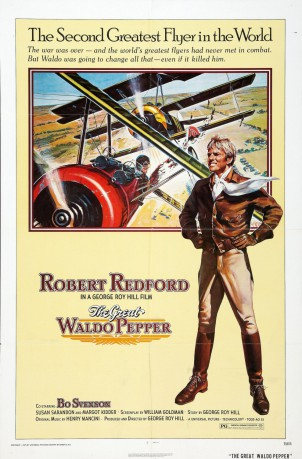
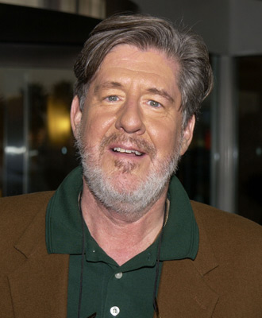

#7078 Tollkühne Flieger
Alternativ: The Great Waldo Pepper
 
 IMDB-Wertung: 6.6 / 10
IMDB-Wertung: 6.6 / 10  Metascore: 0
Metascore: 0 
A biplane pilot who had missed flying in WWI takes up barnstorming and later a movie career in his quest for the glory he had missed, eventually getting a chance to prove himself in a film depicting the dogfights in the Great War.
Jahr: 1975
Dauer: 107 Minuten
FSK: 12
Land: USA Studio: Universal PicturesTonspuren:
Untertitel:
Auflösung: 1080p (1920x816) Größe: 7823 MB
Genre: Drama, Abenteuer
Regisseur: George Roy Hill
Drehbuch: George Roy Hill
Soundtrack:
Darsteller:
 Robert Redford als Waldo Pepper
Robert Redford als Waldo Pepper Bo Svenson als Axel Olsson
Bo Svenson als Axel Olsson- Bo Brundin als Ernst Kessler
 Susan Sarandon als Mary Beth
Susan Sarandon als Mary Beth Geoffrey Lewis als Newt
Geoffrey Lewis als Newt-  Edward Herrmann als Ezra Stiles
 Philip Bruns als Dillhoefer
Philip Bruns als Dillhoefer- Kelly Jean Peters als Patsy
 Margot Kidder als Maude
Margot Kidder als Maude- John Reilly als Western Star
- Lawrence P. Casey als German Star
 R.C. Keene als Air show attendee , uncredited
R.C. Keene als Air show attendee , uncredited- Roderick Cook als Werfel
- Scott Newman als Duke
- James S. Appleby als Ace
- Patrick W. Henderson Jr. als Scooter
- James N. Harrell als Farmer
- Elma Aicklen als Farmer's Wife
- Deborah Knapp als Farmer's Daughter
- John A. Zee als Director, Western Set
- Jack Manning als Director, Spanish Set
- Joe Billings als Policeman
- Greg Martin als Assistant Director
- Kenny E. Bishop als (uncredited
- A.L. Camp als Farmer , uncredited
- Harvey Christiansen als Farmer in Crowd , uncredited
- William Creamer als Country Man in Restaurant , uncredited
- Cheryl Downey als Minor Role , uncredited
- Inge Erving als City Woman in Restaurant , uncredited
- Todd Ezell als Carny Barker , uncredited
- John Guttman als Poth Farmer #2 , uncredited
- Robert S. Holman als Farmer at Fence #1 , uncredited
- Elsie Julian als Country Woman in Restaurant , uncredited
- Patrick G. Koerber als Man in Crowd , uncredited
- Ruby Leonard als Ruby , uncredited
- James Patrick Lockett als Boy from Poth , uncredited
- Richard A. Meyer als Poth Farmer #1 , uncredited
- Steve Moriarty als Airport Mechanic , uncredited
- Wayne Nowotny als (uncredited
- Harold Offer als City Man in Restaurant , uncredited
- Murray Pollack als Doctor , uncredited
- James Rosborough als Farmer at Fence #2 , uncredited
- Art Scholl als Red Baron , uncredited
- George W. Smyth als Little Falls Farmer , uncredited
Datei: X:\1975\Tollkühne Flieger (1975, FSK12, 1920x816).mkv seit 21.09.2017
Festplatte: HD 1971-1979
 Es gibt insgesamt 27 Filme in der Gruppe '1975'
Es gibt insgesamt 27 Filme in der Gruppe '1975'